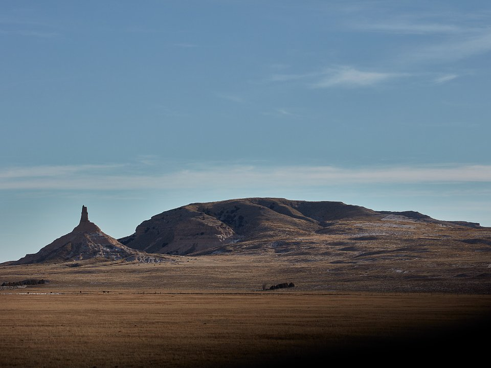

Gering · Hotel
Cobblestone Hotel & Suites
A highly rated hotel near the monument.
Cobblestone for Cobblestone Hotel & SuitesLandmarks of the Oregon Trail.
In western Nebraska, the bluffs that guided pioneers along the Oregon Trail still rise from the plains. Drive or hike to the summit of Scotts Bluff National Monument, see Chimney Rock at sunset, walk beside wagon ruts and visit the Legacy of the Plains Museum.

Time illustration: direct distance at 150 KTAS plus 15 minutes for departure and arrival, matching the discovery page. Use ForeFlight for your actual flight plan.
KBFF, Western Nebraska Regional, is a towered airport a few minutes from town and about 10 minutes from the monument.
Western Nebraska Regional Airport, Scottsbluff, NE
Confirm FBO hours, fees and ground transportation. No live fuel price is shown.
Plains weather: strong winds, spring and summer thunderstorms (this is tornado country) and fast-moving winter systems. About 1260 nm from Myrtle Beach: a long cross-country day with two fuel stops. Plan four or more nights, or break the trip with an overnight on the way.
Rates and availability need travel dates. Options are limited; book early.
A highly rated hotel near the monument.
Cobblestone for Cobblestone Hotel & SuitesA comfortable hotel with breakfast.
IHG for Holiday Inn Express Scottsbluff–GeringLodging close to Scotts Bluff.
Visit Scotts Bluff for Monument Inn & SuitesOptions are limited; plan ahead.
A popular Gering café.
Official details for The Mixing Bowl CafeA Scottsbluff steak and supper spot.
Visit Scotts Bluff for Log Cabin Restaurant & LoungeA long-time local favorite.
Visit Scotts Bluff for El Charrito Restaurant & LoungeBig skies and pioneer stories.
Drive or hike to the summit; see the trail ruts at Mitchell Pass.
MonumentThis prototype links to the local visitor site. It does not yet match events to your travel dates.
A long-running local festival in Gering.
Oregon Trail Days for Oregon Trail DaysMild hiking weather.
Hike early.
Check the local calendar when choosing a weekend, and confirm dates and tickets with the organizer.
A sample long weekend: bluffs, a rock and the trail. This is a long flight; plan four or more nights. No bookings or availability confirmed.
A day trip isn't practical from the Southeast; this is a long-flight destination.
The Scotts Bluff summit road.
Hike the Saddle Rock Trail.
Land at KBFF, subject to weather, your fuel stops and your actual flight plan.
The Scotts Bluff summit road.
Dinner in town.
Hike the Saddle Rock Trail.
Chimney Rock.
Sunset at the rock.
The Legacy of the Plains Museum.
Allow time at the airport.
A long trip east; start early and plan your fuel stops.
Hike the Saddle Rock Trail.
Chimney Rock.
Sunset at the rock.
These details make the difference between an appealing list and a usable getaway.
Lodging and a car first.
About 1,260 nm. Plan two fuel stops and four or more nights.
Strong crosswinds are common.
May to October.
Picks and links reviewed by WingAway Weekends. Hours, prices, menus and availability change often, so confirm directly with each place before booking. Spotted something out of date, or have a favorite we missed? Email us at hello@wingawayweekends.com.
WingAway Weekends helps you discover the destination. Use ForeFlight and current official aviation information for route, performance, weather, NOTAMs and preflight decisions. Flight planning and PIC responsibility stay with the pilot.